24 October 2026
AI is changing Malaysian jobs faster than training and skills lists can keep up. In Malaysia, 56% of professionals use AI tools at work, but only 26% have had formal training (Hays Asia Salary Guide 2025, via the Domain 1 brief). In October 2024, the government said about 600,000 workers in 10 sectors needed reskilling within three to five years (Bernama). TalentCorp projects about 620,000 workers, 18% of the workforce in the sectors it studied, will be significantly affected (Impact Study). A World Bank and ISIS Malaysia study rates 28% of the workforce highly exposed to AI (World Bank, 2025). Skills are also under-used: in Q2 2026, 35.2% of employed tertiary-educated workers held semi-skilled or low-skilled jobs (OpenDOSM; hiring-bar evidence).
Our user is a working adult in Malaysia, in any industry, who wonders what AI means for their job. They come with a worry and a few minutes, often on a phone. Some want to keep their job safe, some to move to a role they have in mind, and some to learn where they could go (users).
Today they get static lists. TalentCorp's MyMahir maps roles and skills, but shows no score, time estimate, scenario or SDG tag, and no Malaysian tool we checked joins role data to a scored gap and a timed pathway (prior art). Without dated evidence, a worker cannot tell which skills to learn first, and may spend scarce hours on tasks AI is taking over.
Kotak, Malay for "box", is a web app. Kopi, a cat counsellor, asks 12 can-do questions, rated 1 to 4, about the user's job or a role they want. It draws a Future Skills Radar of the job's 6 core skills, ranks matched roles and builds a dated roadmap in about 3 minutes.
The six must-haves:
Fixed rules, not AI, set every verdict, score, ranking and roadmap order. AI does four jobs:
From the Phase 1 workshops, we use GenAI APIs (Claude), Postgres (Neon), cloud hosting (Cloudflare Workers and Replit) and RunPod serverless GPUs (workshops; Workshop 1).
Kotak is a TypeScript monorepo run with Bun. It has two apps, apps/web (the React app) and
apps/api (the Hono API), and four packages: shared (the rules and Zod schemas),
sdk (the check-up engine), agent (the AI tools) and browser (the
JobStreet scraper's browser).
localStorage keeps answers, goals and
ticked steps.
@kotak/agent exposes 8 read-only tools over
@kotak/sdk: find a role, get the questions, suggest roles, run a check-up, what changed,
national skill gaps, job ads in Malaysia and list sources. Ask Kopi calls them through Claude, and outside
assistants call them through /api/mcp. Every number the agent quotes comes from a tool.
eleven_v4, and live
lines use eleven_v4_turbo. The API caches audio by a hash of the text, and the key stays on the
server (TTS notes).
aws-ap-southeast-1). One table holds the
anonymous national view: only a role code, 6 skill levels, a sample flag and a date, with totals only for
groups of 10 or more; no screen sends check-ups yet, so it holds labelled sample rows. Other tables hold the
scraper's JobStreet listings, the admins' reviews and matched skills, and the admin accounts.
Qwen/Qwen3.8-27B-FP8 on vLLM for the
one-time batch that builds 6 skills and 18 can-do statements for each of 923 jobs.
main, or when a member clicks "Run workflow" (deploy notes). Replit publishes the same main branch from the team's own account. API keys and the
database URL live in GitHub, Cloudflare and Replit secrets, never in code.
System block diagram: see Appendix A.
Sponsor platforms: yes, Kotak uses both.
main on its own Replit account at the
live demo link. The project link, its history and the published app are the proof of use.
main, so any member can ship.
Target 4.4, "By 2030, substantially increase the number of youth and adults who have relevant skills, including technical and vocational skills, for employment, decent jobs and entrepreneurship". It is measured by indicator 4.4.1, "Proportion of youth and adults with information and communications technology (ICT) skills, by type of skill" (UN SDG API, goal 4).
The target, indicator and baseline come from the UN SDG API, accessed on 22 October 2026, following our impact notes.
In 2024, 39.8% of Malaysians aged 15 and over had above-basic digital skills in all 5 skill areas, and 19.6%
reported writing a computer program in a programming language. Both figures are indicator 4.4.1, series
SE_ADT_ACTS, from DOSM (UN SDG API, Malaysia). For AI skills, 56% of Malaysian professionals use AI tools at work, but only 26% have had formal training
(Domain 1 brief).
The sourced-roadmap rate. It is the percentage of finished check-ups that reach a roadmap in under 3 minutes, where every verdict, fit score and milestone shows its source and date. A second count tracks uncited recommendations, which must stay at 0 (LLM credibility notes).
100% of 20 seeded test profiles reach a sourced roadmap in under 3 minutes with 0 uncited recommendations (LLM credibility notes). On 100% of the hand-checked demo roles, the April-to-May 2026 snapshot swap changes at least one verdict (demo roles).
Not applicable. Kotak's code, design and research are new work by the team during the hackathon.
The Live2D licence says "the Customer may not Redistribute all or part of the Material to third party" (clause 4.1.1). The team keeps the model in the repository and credits Live2D, a risk it accepted on 22 October 2026 (mascot decision).
The code also uses these open-source frameworks and tools: Bun, TypeScript, React, Vite, Tailwind CSS, Recharts, pixi.js, pixi-live2d-display, Hono, Zod, the Anthropic TypeScript SDK, the MCP server SDK, the Neon serverless driver, Cloudflare's Wrangler, Playwright and Clearcote. Every licence is listed in the technical declaration and in NOTICE.md. Kotak runs on hosted services that add no code to the repository: Cloudflare Workers, Neon Postgres, GitHub Actions and Replit.
Not applicable. No team member is bound by an employment, internship or consulting agreement that lets an employer claim work made during the hackathon.

Public data, weekly refresh and RunPod feed dated snapshots for the browser rules. Deployment serves React and Hono. Hono connects Claude, ElevenLabs and agent tools; the tools connect Neon Postgres.